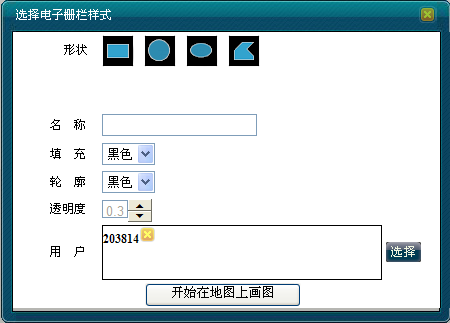

调度员可在地图上定义一个区域（可显示或隐藏区域边界），将移动用户划在该区域中。当移动用户离开这个区域时会有报警提示。GIS系统日志中也会出现相关的提示信息。调度员亦可在需要时取消移动用户的电子栅栏。
本节主要介绍调度员用户通过地图右键操作或者调度功能菜单中的呼叫面板两种方式添加电子栅栏信息。在呼叫面板中还可以对电子栅栏的信息进行维护。包括新增、修改和删除电子栅栏以及定位/显示电子栅栏。
1）在地图上选中移动用户。
2）右键单击［应用业务/电子栅栏］，弹出“选择电子栅栏样式”对话框。如下图所示。

选择电子栅栏
3）调度员也可根据实际需要新增多个移动用户，选择“电子栅栏形状”，输入“名称”，选择“填充”颜色、“轮廓”、“透明度”以及“样式”等。此时，在窗口的右中心位置会形象地显示电子栅栏形状的样式。
4）单击＜开始在地图上画图＞。在地图上确定起始点，然后在地图上开始画被控区域形状，此时，在画图过程中，鼠标上方会有悬浮提示如何操作。
5）操作完成后，系统提示“电子栅栏添加成功”。
1）在系统操作菜单栏中单击［调度功能/呼叫面板］，弹出“呼叫面板”对话框。
2）单击“应用业务”模块中的“电子栅栏”，弹出“电子栅栏信息维护”对话框。如下图所示。
电子栅栏信息维护
3）电子栅栏列表每条记录后面都有4个选项，分别是显示、定位、修改和删除。
4）在“电子栅栏信息维护”对话框点击＜新增＞，弹出“选择电子栅栏样式”对话框。开始新增电子栅栏。
新增电子栅栏
5）在需修改的电子栅栏右侧单击＜修改＞，或者在地图上双击电子栅栏，弹出“修改”电子栅栏对话框，用户根据实际需要修改删除用户成员，如下图所示。
修改电子栅栏
6）在“电子栅栏信息维护”对话框的电子栅栏列表右侧单击删除图标，系统弹出确定删除该电子栅栏信息的确认窗口。
删除电子栅栏
7）在“电子栅栏信息维护”对话框的电子栅栏列表右侧单击“定位”图标，地图的中心点会立即定位到该栅栏当前在地图上所处的位置，并且有特殊图标标记，实现快速定位功能，如下图所示。
定位电子栅栏
8）在“电子栅栏信息维护”对话框的电子栅栏列表右侧，在“显示”一栏下，若勾选，则在地图上可显示该电子栅栏；若“显示”打叉，则在地图上隐藏该电子栅栏。
9）设置了电子栅栏以后，如果用户越出了电子栅栏，系统日志里会有提示信息。
用户越出电子栅栏提示信息
 说明：
说明：
各图形样式确定范围的方式不一样：
矩形：在地图上确定起始点，然后点击鼠标左键不松开，移动到结束点后松开鼠标左键结束。信息包含各顶点的经纬度。
椭圆形：在地图上确定起始点，然后点击鼠标左键不松开，移动到结束点后松开鼠标左键结束。信息包含：中心经纬度及半径。
多边形：在地图上单击鼠标左键开始画图与继续画图，单击鼠标右键结束画图，开始后不得缩放地图。信息包含各顶点的经纬度。
Copyright © 2012 Eastcom, Inc. All rights reserved. |
||